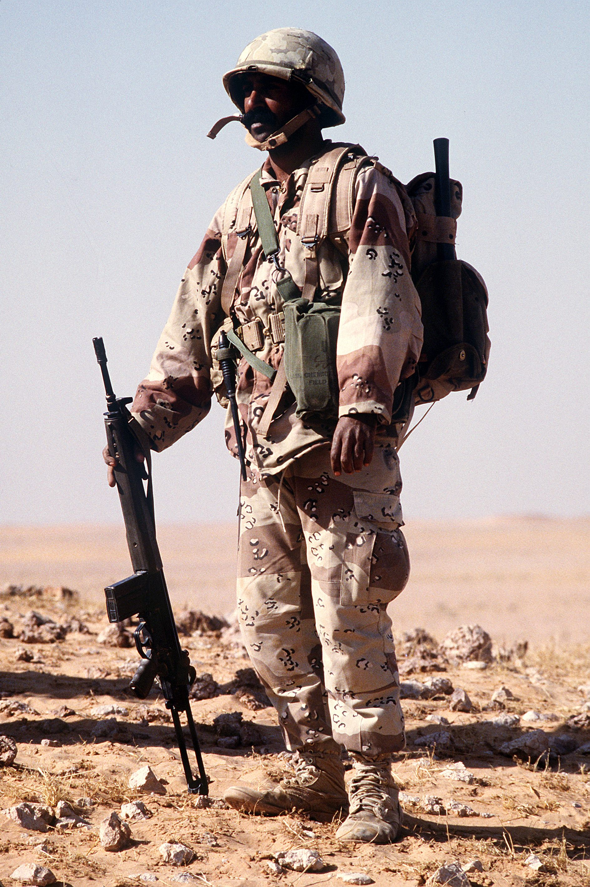
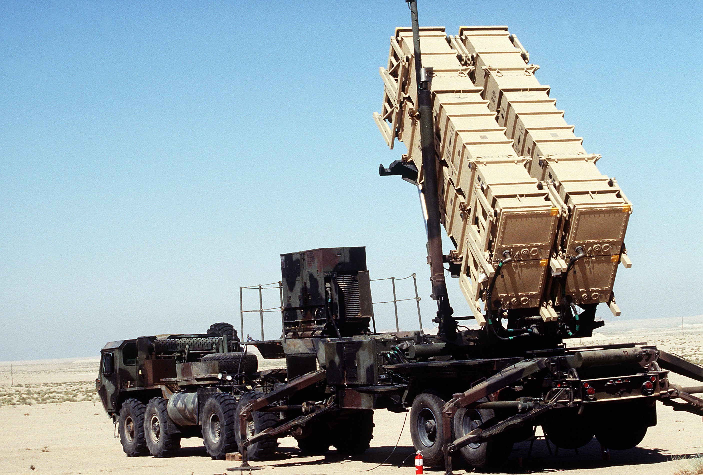
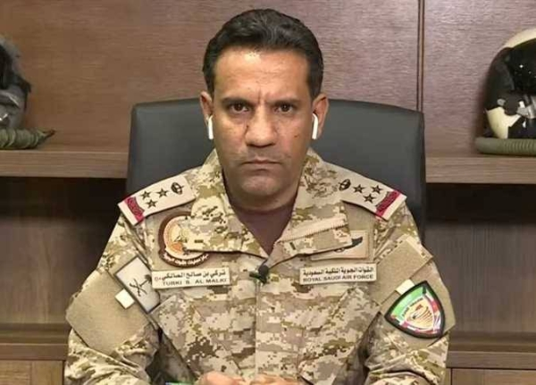
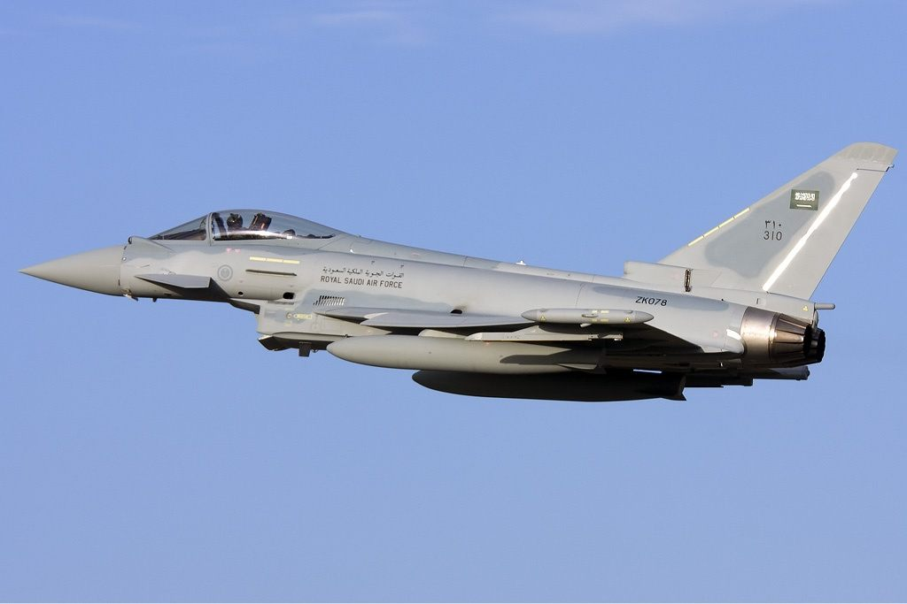
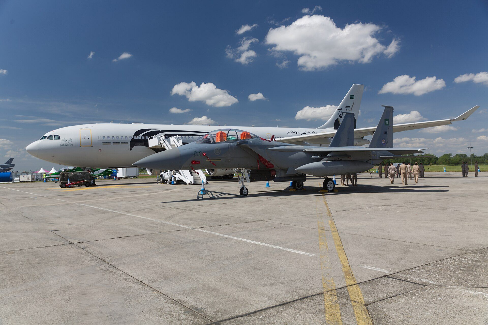
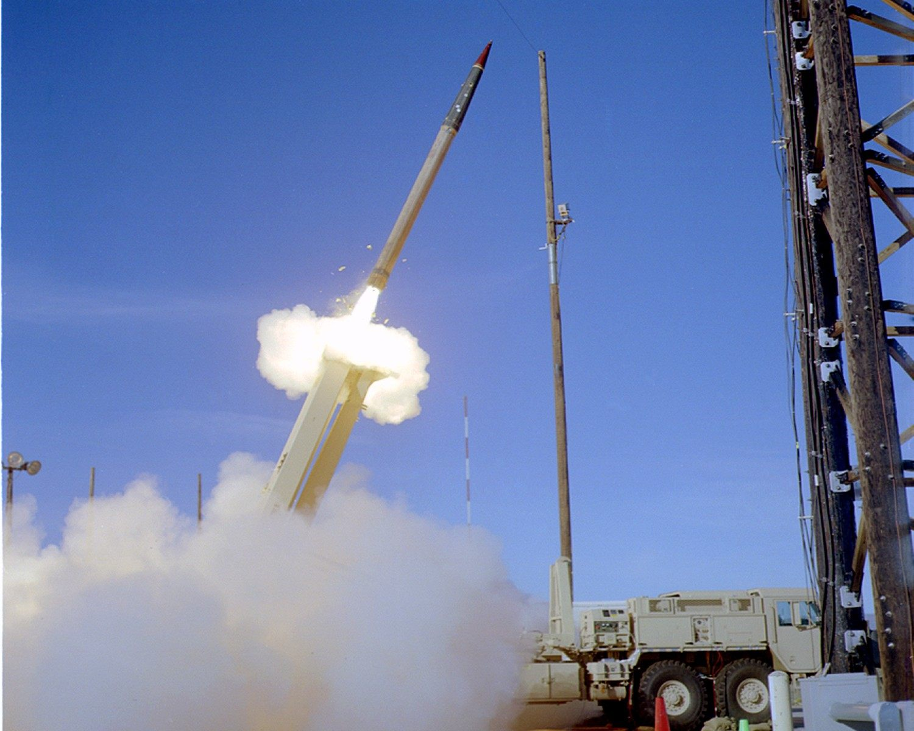
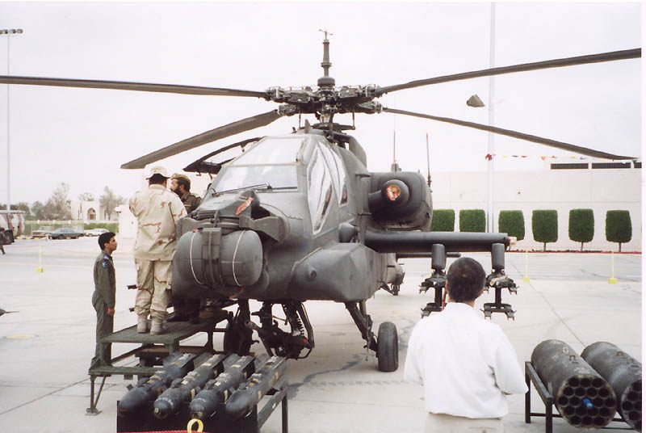

النطاق
من توحيد المملكة عام 1932 إلى اليوم: محطات البناء والدفاع في مسارٍ واحد.
المملكة العربية السعودية
أمن الوطن عهد · وحمايته شرف · والوفاء له موقف
المملكة العربية السعودية · سجل البطولات
«الدفاع عن العقيدة الإسلامية، والمجتمع، والوطن، هو مسؤولية كل مواطن، ويحدد النظام الوسائل الكفيلة بذلك.» المادة الرابعة والثلاثون · النظام الأساسي للحكم
26 مارس 2015 — انطلاق عملية عاصفة الحزم
عن السجل
سجلٌ وطني يوثّق محطات القوات المسلحة السعودية وإنجازاتها في الدفاع عن الوطن وحماية أمن المنطقة، بترتيبٍ زمني ومراجعَ معلنة.
من توحيد المملكة عام 1932 إلى اليوم: محطات البناء والدفاع في مسارٍ واحد.
توثيق زمني للأحداث، يفصل بين الوقائع والأرقام، ويُحيل إلى مصادره.
الرجوع إلى الجهات الرسمية والوكالات المعتمدة، وإعلان المراجع في نهاية السجل.
مراجعة دورية للمحتوى والأرقام، مع تاريخ آخر تحديث وإصدار موثّق.
المسيرة التاريخية
محطاتٌ فارقة صنعت تاريخ المملكة العسكري، من توحيد الوطن إلى حماية أمن المنطقة.
تأسيس الدولة السعودية الحديثة على يد الملك عبدالعزيز آل سعود، ووضع اللبنة الأولى لقوات مسلحة تحمي الوطن وحدوده.
تأسيس قوة درع الجزيرة التابعة لمجلس التعاون لدول الخليج العربية، لتكون ركيزةً للأمن الجماعي الخليجي.
احتضنت المملكة قوات التحالف على أراضيها، وشاركت قواتها المسلحة في تحرير دولة الكويت الشقيقة في 26 فبراير 1991.
لبّت قوات درع الجزيرة نداء الأشقاء في مملكة البحرين، وأمّنت المنشآت الحيوية وأعادت الاستقرار، تأكيدًا أن أمن الخليج كلٌّ لا يتجزأ.
انطلاق التحالف العربي بقيادة المملكة استجابةً لنداء الشرعية اليمنية، وتعطيل القدرات التي تهدّد أمن الخليج والملاحة الدولية.
انتقالٌ إلى مسار سياسي وإنساني شامل: حماية المدنيين، دعم الشرعية، وإعادة بناء مؤسسات الدولة اليمنية.
تعزيز شبكة الدفاع الجوي بمنظومات متعددة الطبقات، وتوسيع القدرة على رصد واعتراض الصواريخ الباليستية وصواريخ الكروز.
استمرار حماية الحدود والمنشآت الحيوية، بالتوازي مع توطين الصناعات العسكرية وبناء قدرات وطنية مستدامة.
القرار الحاسم
في فجر السادس والعشرين من مارس 2015، أعلنت المملكة العربية السعودية انطلاق عملية «عاصفة الحزم» بقيادة قوات التحالف العربي، استجابةً لنداء الشرعية اليمنية، وانطلاقًا من مسؤوليتها في حماية أمن الخليج والمنطقة والممرات الملاحية الدولية.

أمن الخليج
لم تكن المملكة يومًا جارةً على الورق؛ فحين تعرّضت دولة الكويت الشقيقة للاحتلال في 1990، فتحت المملكة أراضيها لقوات التحالف الدولي في عملية «درع الصحراء»، ثم شاركت قواتها المسلحة بفاعلية في «عاصفة الصحراء» حتى إعلان التحرير في 26 فبراير 1991.
جناحا الوطن
مؤسستان شقيقتان تتكاملان في حماية الوطن وصون مكتسباته، من جيش التوحيد إلى درع الحاضر.
سيف الوطن ودرعه؛ تجمع القوات البرية والجوية والبحرية والدفاع الجوي وقوة الصواريخ الاستراتيجية، وتقف في الصف الأول دفاعًا عن السيادة والأمن الإقليمي.
قوة عسكرية نظامية ذات تاريخٍ يمتد إلى جيش التوحيد؛ تساند القوات المسلحة، وتحمي الأمن الداخلي والحدود، وتقف مع الأشقاء في الملمات.
حماية الوطن
جاهزيةٌ دائمة ويقظةٌ لا تنام، لحماية الأرض والإنسان والمنشآت الحيوية.
منظومات دفاع جوي متعددة الطبقات تتعامل مع الصواريخ الباليستية والطائرات المسيّرة قبل وصولها إلى أهدافها.
انتشار ميداني متواصل ومراقبة تقنية للحدود، لإحباط محاولات التسلل والتهريب وحماية القرى والمدن الحدودية.
تغطية دفاعية شاملة للمنشآت النفطية والمطارات والموانئ، لضمان استمرارية الاقتصاد وأمن المجتمع.
حصيلة التصدي
إحصاءات معلنة للتحالف العربي عن التهديدات الجوية التي أُطلقت باتجاه المملكة، واعتراضات حديثة.
* الإحصاء التراكمي وفق ما أعلنه التحالف العربي (ديسمبر 2021)، مع إعلانات اعتراضات لاحقة.
سجّلت المملكة العربية السعودية سابقةً عالمية في التصدي لصواريخ الكروز، حين نجحت وسائل دفاعها الجوي في رصد وتتبّع واعتراض صواريخ كروز أطلقتها ميليشيا الحوثي باتجاه المدن والمنشآت الحيوية؛ لتكون أول دولة في العالم تحقّق اعتراضًا عمليًا لصاروخ كروز في بيئة قتال حقيقية.
شبكة رادارات متكاملة ترصد الأهداف منخفضة الارتفاع وسريعة المناورة.
أنظمة قيادة وسيطرة تربط الرادار بالمنصات في زمن استجابة قصير جدًا.
منظومات باتريوت وثاد وغيرها تتعامل مع التهديد قبل بلوغه الهدف.
إنقاذ الأرواح وصون المنشآت الحيوية في مواجهة هجمات عابرة للحدود.
* الإنجاز مُوثَّق في البيانات الرسمية لوزارة الدفاع السعودية.


صوت الميدان
صوتٌ يعرفُه الميدان، ولسانٌ حمل رسالة القوات المشتركة إلى العالم؛ كلماتٌ قليلة، لكنها تختصر موقف وطنٍ لا يغضب إلا حين تُمسّ سيادته.
«نحن كسعوديين قد نسامح، ولكن لا ننسى..
— اللواء الركن تركي المالكي
لا نغضب.. لا نغضب.. وإن غضبنا أوجعنا.»
المنظومات والمعدات
منظومات جوية ودفاعية وبرية متكاملة، تُشغّلها كفاءات سعودية مدرّبة على أعلى مستوى.
مقاتلة متعددة المهام بقدرات ضربة بعيدة المدى ورادار حديث، عمود فقري للسيادة الجوية.

مقاتلة تفوّق جوي عالية الأداء، تعزز قدرة الردع والاعتراض السريع.

تزويد بالوقود جوًا ونقل استراتيجي، يمنح العمليات الجوية مدىً وتحملًا أطول.
اعتراض الصواريخ الباليستية وصواريخ الكروز، وحماية المدن والمنشآت الاستراتيجية.

طبقة دفاع عن الارتفاعات العالية والمسافات البعيدة، ضمن شبكة متعددة المستويات.

مروحية هجومية تقدم إسنادًا ناريًا قريبًا دقيقًا لقوات الميدان.
سماءٌ لا يطال غمامها
وأرضٌ لا يمسّ ثراها
من مبادئ القوات المسلحة السعودية
من الميدان
لقطات من سلاح الجو والدفاع الجوي والقوات البرية.
اعتزازٌ وامتنان
تحيةً لكل جنديٍّ سهر على أمننا، وكل شهيدٍ كتب بدمه صفحات المجد.
العودة إلى الأعلىالمراجع
يعتمد السجل على الجهات الرسمية والوكالات المعتمدة، وتُحدَّث الأرقام وفق ما تعلنه الجهات المختصة.
حقوق الصور: الصور الفوتوغرافية من Wikimedia Commons وتُستخدم وفق رخص CC BY-SA أو الملكية العامة، ولأغراض التوثيق.
آخر تحديث: 21 أكتوبر 2026 · الإصدار 1.0